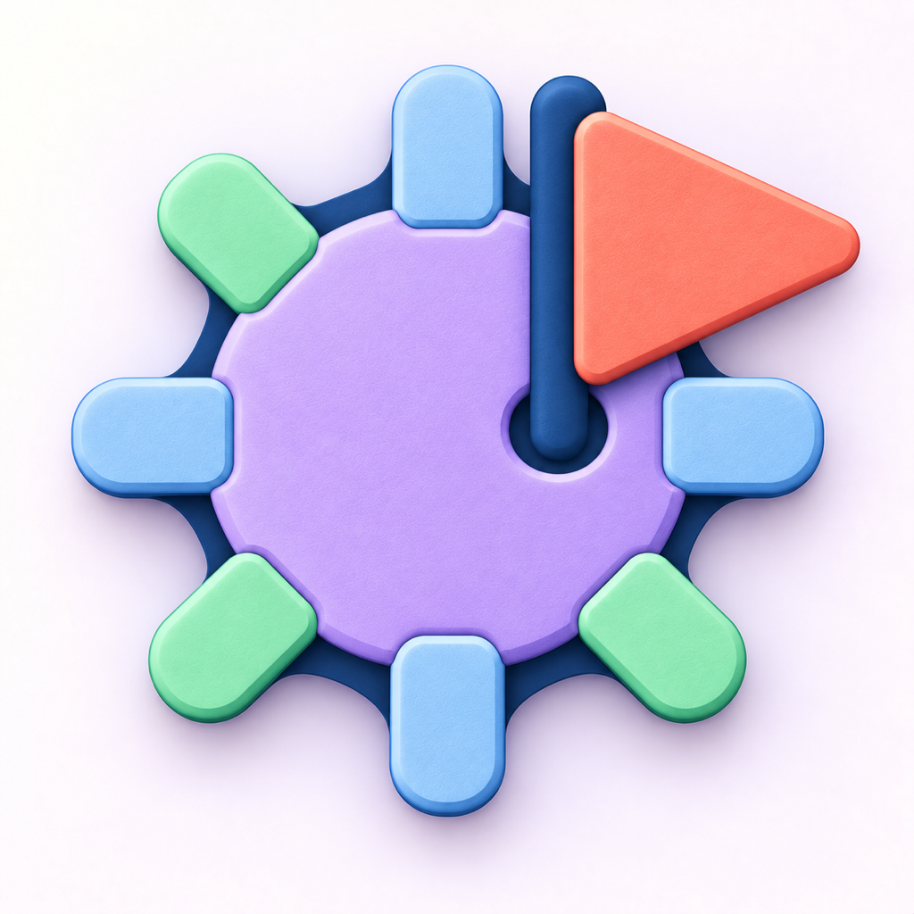

A Better Looking Minesweeper
Privacy Policy
Effective date: 14 September 2026.
This policy covers A Better Looking Minesweeper, published by Game Pac (Panduranga Shenoy Kudige). Questions about this policy or about your data are welcome at kudige@icloud.com.
Local play and optional leaderboards
A Better Looking Minesweeper works offline and does not require an account. The app contains no ads, no in-app purchases, and no tracking or analytics SDK added by the developer. Online leaderboards are optional and run through Apple Game Center; local play needs no Game Center or developer account. Game Pac does not receive gameplay, saved boards, records, or settings from the app.
What is stored on your device
Saved game data (including boards, markers, and elapsed time), local records and best times, settings, whether the welcome has been shown, and tutorial recovery status are stored on your device. If you use the optional leaderboards, the app also stores locally each run’s Game Center eligibility and the player identifier kept with the current game so its result stays associated with the correct player. Depending on your Apple and device backup settings, backups may include this local app data. Reset Statistics… in the app clears records and best times but keeps your current board; it does not delete scores already held by Game Center. Deleting the app removes its local data from the device; any copies in backups are handled separately by your backup settings, and deletion of Apple’s Game Center copies cannot be promised, as those are governed by Apple.
Game Center leaderboards
If you choose to sign in to Game Center, eligible winning times are submitted to Apple’s leaderboards through Apple’s GameKit service. Game Pac operates no score server and receives no gameplay upload from the app: scores go from your device to Apple, not to the developer. Apple processes Game Center information under its own privacy policy.
Apple can process your Game Center activity and information associated with your Apple account, and your Game Center nickname, avatar, and scores can be visible to other players depending on Apple’s service and your settings. For details, see Apple’s official notice, Game Center & Privacy. Controls and retention of Game Center data follow Apple.
TestFlight beta testing
If you install the app through TestFlight, Apple automatically collects beta crash and usage information and shares it with the developer; this platform collection cannot be opted out of, and it can include tester and device details. Feedback you deliberately submit through TestFlight, such as comments or screenshots, is voluntary and is shared with the developer. This Apple platform collection is separate from the app itself, which adds no tracking of its own. For details, see Apple’s official notice, TestFlight & Privacy.
Support emails and developer-held data
Emailing support is optional. If you write to kudige@icloud.com, your email address, message, and any attachments you choose to include are used to help with your request.
Support emails held by the developer, and TestFlight reports and feedback downloaded by the developer, are used only for support and app improvements. They are kept only as long as needed for those purposes and then deleted, unless longer retention is legally required. Copies held by Apple follow Apple’s own privacy policy. To ask about access to or deletion of developer-held data, contact support; deletion of Apple’s own copies cannot be promised, as those are governed by Apple.
About these web pages
Opening these pages uses ordinary web hosting. These pages themselves add no tracking, ads, analytics, or forms. The site is hosted on GitHub Pages, which may process technical requests as described in the GitHub General Privacy Statement.
Changes to this policy
If this policy changes, the updated version will be dated on this page. Questions or requests can be sent to kudige@icloud.com, and the Support page has more contact details.